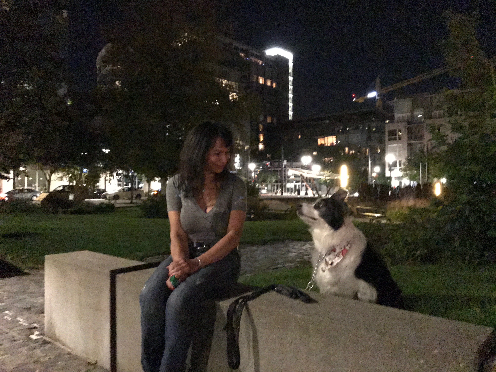

home page
My career achievements, have had its share of good experience and many learned technologies, but of those I am most proud of my job working for the Homeless Management Information System in the City of Austin. I began the job as technical support for HMIS(Homeless Management Information System) and Community Voice Mail. After three months I was promoted to System Administrator for the city of Austin.I had no idea of all the challenges and work I would have to quickly learn, but I grew into the position in no time flat. In my first year I got nationally recognition as rookie of the year. I got on the fast track to learn all about Bowman Systems and was one of the first to roll out the new ServicePoint® interface for over 200 end users; for non-profits such as Salvation Army, Caritas, Goodwill, to name a few.
Along with providing all the training necessary to use ServicePoint® I was the system administrator in charge of setting up securities for users into their programs and creating reports for grant applications for programs like HPRP. Because of my attention to detail the city of Austin was awarded $2.5 million for Veterans program called SSFV signed by President Obama. Along with all my experience I have worked side by side with City leaders addressing homelessness in Austin, providing critical and important information as to the future of community development as for homeless housing preparedness. Nothing is more important to me than being part of a solution driven team.
Thank you,
